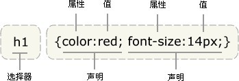

Web基础课程Lab - CSS中选择器（selector）的使用
Lab介绍：在这个Lab中，同学们主要将会继续学习CSS选择器的使用和巩固CSS各种属性的用法。CSS的选择器很多，今天我们主要就类型选择器，后代选择器，类选择器，ID选择器和伪类选择器的内容来做一定的练习，同时大家还需要对之前学习的CSS各种属性的使用做一个巩固，有效地掌握这些CSS属性和选择器的使用能对大家今后Web开发打下良好的基础。
注意Lab截止时间：本周四晚 提醒：在Lab的过程中，主要掌握选择器的使用，具体的属性设置主要写出来给大家学习，大家也可以自由发挥。
所有的 CSS 信息请大家写入index.css文件，尽量不要写内联样式，在Project中如不正确地使用内联样式会导致扣分，在Lab中请大家养成 CSS 独立成文件的习惯。
一、类型选择器
在这部分，同学们需要使用CSS中的类型选择器，来实现CSS效果：
1、给下面的 span 标签中的字体加为红色，加粗：
类型选择器用来寻找
特定类型的元素，比如
段落、锚或标题元素，只需指定希望应用样式的元素的名称。类型选择器有时候也称为
元素选择器或简单选择器。
2、给下面的 em 标签的字体加为红色，斜体，虚线红色下划线：
em是emphasis的缩写，多数浏览器都会使用斜体显示
em标签里的内容(所以很多人以为
em代表斜体)，这是没有必要的，斜体应该使用CSS来实现.
二、关系选择器
在这部分，同学们需要使用CSS中的后代选择器，来实现CSS效果：
1、学习ul li列表在列表中使用后代选择器
（1）尝试在ul类型中使用
list-style-type: none; 来去除列表前的点；
（2）尝试让li中的每一行字的字号为14px，加粗；
（Hint：使用后代选择器）
（3）从第二行开始的列表斜体；
（Hint：使用兄弟元素选择器）
（4）使li下的strong元素变为红色
（Hint：使用子元素选择器）
使用CSS有如下作用和好处：
- 表现和内容相分离
- 提高页面浏览速度
- 易于维护和改版
- 使用CSS布局更符合现在的W3C标准
三、类选择器
在这部分，同学们需要使用CSS中的类选择器，来实现CSS效果：
1、请给下面的段落添加合适的CSS内容，使其达到：
（1）80%的宽度并层居中显示
（2）添加背景色#888888和边框#444444 1px
（3）添加四周10px的空白
（4）首行缩进2字符
你所编写的CSS看起来应该是这样的格式：
(. or #)paragraph { /* Start of class paragraph CSS */
background-color: //背景颜色设置
width: //宽度设置
margin: 0 auto; //这行不用改，它表示居中（并非里面的文字居中），同学们可以记住，以后很有用
border: //边框（虚线用dashed，实线用solid，点线用dotted）
padding: //四周的空白设置
text-indent: 2em //此行不用改，text-indent属性表示首行缩进，2em是长度单位，表示两个字符的长度
} /* End of class paragraph CSS */
在页面显示的过程中，有很多的样式作用在页面元素上，这些样式来自不同的地方。浏览器自己有默认的样式，网页作者有自己写的样式，用户也可能有自己的样 式， 但是最终显示的样式是其中之一，它们之间产生了冲突，CSS通过一个称为层叠（cascade）的过程处理这种冲突。层叠给每个规则分配一个重要度：作者 的样式表被认为是最重要的，其次是用户的样式表，最后是浏览器或用户代理使用的默认样式表。为了让用户有更多的控制能力，可以通过将任何规则指定 为!important来提高它的重要度，让它优先于任何规则，甚至优先于作者加上!important标志的规则。
四、ID选择器
在这部分，同学们需要使用CSS中的类选择器，来实现CSS效果：
1、请给下面的图片添加合适的CSS内容，使其达到：
（1）添加2px粗细的边框，颜色为#999999，线性为实线；
（2）为图片添加10px的外部空白（margin）；
（3）为图片添加2px的内部空白（padding）；

2、请给下面的文表格添加合适的CSS内容，使其达到：
（1）文字大小为14px，颜色黑色，标题使用红色，你可以使用CSS内联样式实现，参考
STYLE="color: red;" ；
（2）文字居中（不是表格居中）；
（3）表格行高为30px；
你所编写的CSS看起来应该是这样的格式：
(. or #)table_example { /* Start of class table_example CSS */
font-size: /* 字号大小设置 */
color: /* 字体颜色设置 */
line-height: /* 行高设置 */
text-align: /* 表格字体居中设置 */
border-collapse: collapse; /* 边框填充，有兴趣的同学可以把这行去掉再看看效果 */
} /* End of ID table_example CSS */
| 属性 |
描述 |
CSS |
| background |
在一个声明中设置所有的背景属性。 |
1 |
| background-attachment |
设置背景图像是否固定或者随着页面的其余部分滚动。 |
1 |
| background-color |
设置元素的背景颜色。 |
1 |
| background-image |
设置元素的背景图像。 |
1 |
| background-position |
设置背景图像的开始位置。 |
1 |
| background-repeat |
设置是否及如何重复背景图像。 |
1 |
五、通配选择器
在这部分，同学们需要使用CSS中的通配选择器，来实现CSS效果：
1、删除 index.css 中最前面的*通配符内容，看看页面会有什么变化？
介绍：这句 CSS 代码的意思是去除掉所有浏览器页面的周围的内边距和外边距，是非常多网站必备的代码，当然，这句代码的实际性能影响是否有意向还待商榷。
六、伪类选择器
在这部分，同学们需要使用CSS中的伪类选择器，来实现CSS效果：
1、使用四种常见的伪类选择器实现效果：
（1）在有链接的时候，字的颜色应该为红色，没有下划线；
（2）当把鼠标放到链接上的时候，字的颜色变为蓝色，有下划线；
（3）当访问过链接的时候，字的颜色变为黑色，没有下划线；
提醒：在 CSS 定义中，要严格遵循LVHA原则，即
a:hover 必须被置于
a:link 和
a:visited 之后，才是有效的。
在 CSS 定义中，
a:active 必须被置于
a:hover 之后，才是有效的。
伪类名称对大小写不敏感。
有无下划线可以使用属性
text-decoration: underline/none; 来控制。
复旦大学：http://www.fudan.edu.cn
交通大学：http://www.sjtu.edu.cn
给我写信（电子邮件链接，点击可以直接发送电子邮件，大家可以学习一下）